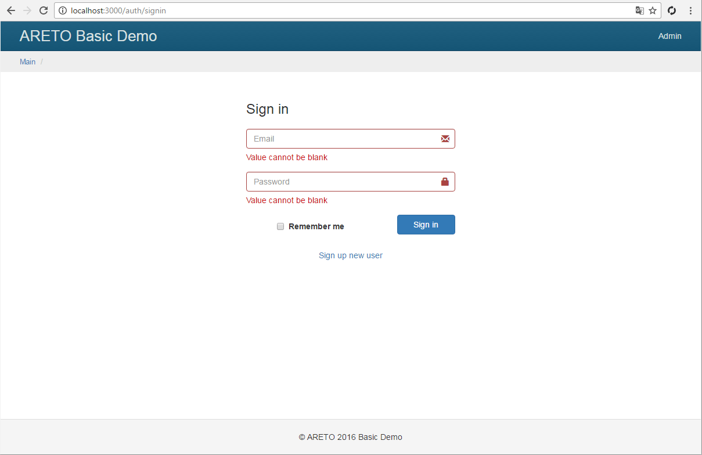

Форма входа
Форма входа принимает логин/пароль и ищет в базе соответствующую запись пользователя.
model/SignInForm.js
Валидация формы необходима, чтобы фильтровать некорректные значения ввода.
model/SignInForm.js
Метод login проверяет данные формы.
Если ошибок нет, то передает управление checkUser для поиска пользователя в базе.
model/SignInForm.js
В методе checkUser пользователь ищется по уникальному логину, в роли которого выступает email.
Если пользователь с данным email существует, то будет создан экземпляр класса User.
Дальнейшие проверки пользователя осуществляют методы этого класса.
Обратите внимание на одинаковый ответ сервера в случае не найденного логина и неправильного пароля. Этим закрывается возможность для посторонних узнать существует ли данный логин в базе.
Помимо пароля проверяется статус учетной записи. Если пользователь заблокирован, то сервер вернет соответствующее сообщение об ошибке входа.
После успешных проверок в методе webuser.login осуществляется привязка текущей пользовательской сессии
к найденному пользователю.
Если на форме был отмечен чекбокс rememberMe, то в куки броузера будет добавлена информация
для автоматического входа пользователя на указанный период.
model/SignInForm.js